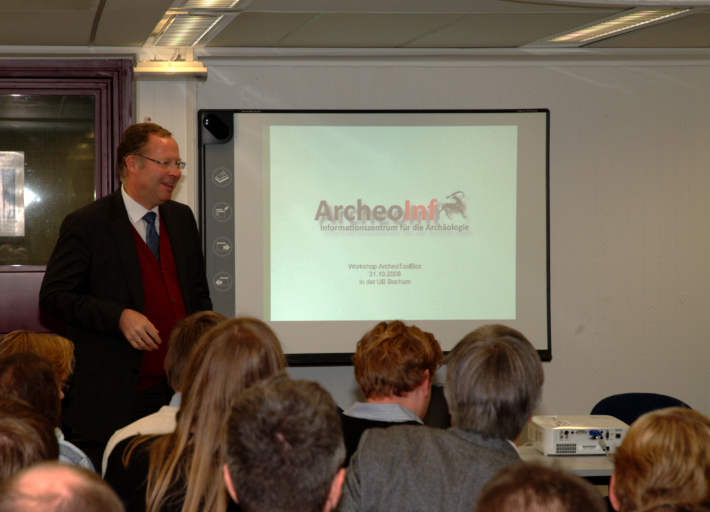
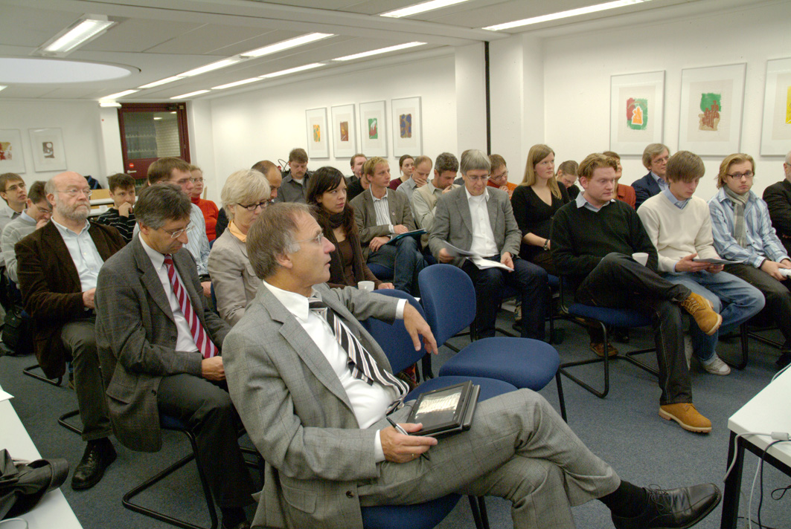
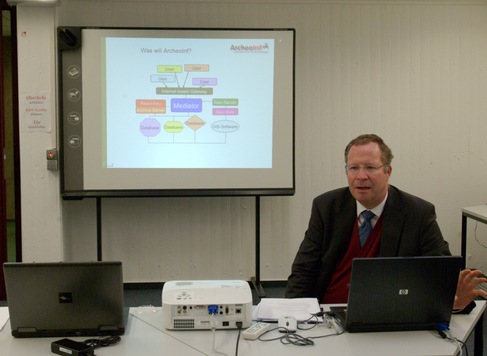

Workshop am 31.10.2008
Veranstaltungsort
Ruhr-Universität Bochum, Universitätsbibliothek, Konferenzraum in der 6. Etage
Teilnehmer
- Martin Grünheid und Fred Schön, Universität Tübingen – Zisternenprojekt Pantelleria
- Franziska Lang, Nico Schwert, Thomas Hinzberger, TU Darmstadt/Freie Universität Berlin – Plaghia-Survey
- Katrin Mertens, Helms-Museum, Hamburg
- Axel Posluschny, DAI – Römisch-Germanische Kommission Frankfurt, Projekt Keltische Fürstensitze
- Axel Vitzthum und Florian Klucke, Universität Kiel – Digikult
- Mathias Wilbertz, Niedersächsisches Landesamt für Denkmalpflege, Hannover
Bereitgestellte Vorträge
- Auf dem Weg zu einer digitalen Erfassung der Archäologischen Sammlung im Helms-Museum / Katrin Mertens, Helms-Museum, Hamburg
- IT-Einsatz im Projekt „Fürstensitze“ & Umland: Ziele – Wege – Erfahrungen / Axel Posluschny, DAI
- Erfahrungen der (staatl.) Denkmalpflege Niedersachsens mit der Erfassung und Verwaltung von Daten / Mathias Wilbertz, Niedersächsisches Landesamt für Denkmalpflege, Hannover
Fotos


